01
Une porte, un village
Au 22 rue Principale, à Puyricard : une façade crème, un auvent vert pâle, des pots qui débordent sur le trottoir et deux tables de bistrot pour les curieux. On entre comme on entre chez quelqu’un.
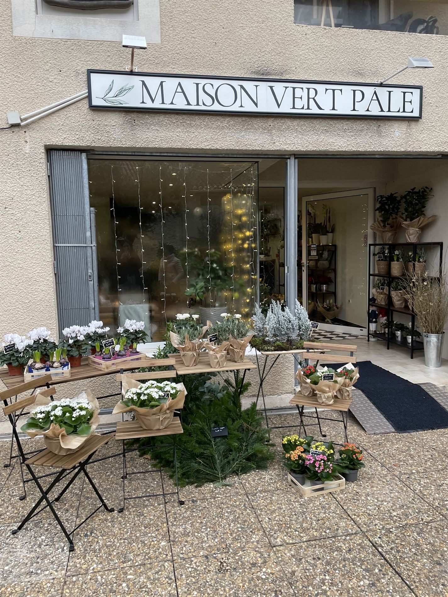
Concept store floral · Salon de thé · Puyricard
Des fleurs coupées, des plantes en jolis pots et une table pour poser le temps : la maison florale du village de Puyricard.
Fleurs coupées, bouquets sur mesure, compositions, plantes en pots, salon de thé, biscuits maison, cérémonies, à Puyricard.
La maison
01
Au 22 rue Principale, à Puyricard : une façade crème, un auvent vert pâle, des pots qui débordent sur le trottoir et deux tables de bistrot pour les curieux. On entre comme on entre chez quelqu’un.

02
Pivoines, lisianthus, dahlias, œillets, amarantes… ce qui est beau cette semaine, pas ce qui est facile toute l’année. Les bouquets se composent à la main, selon vos couleurs et votre budget.
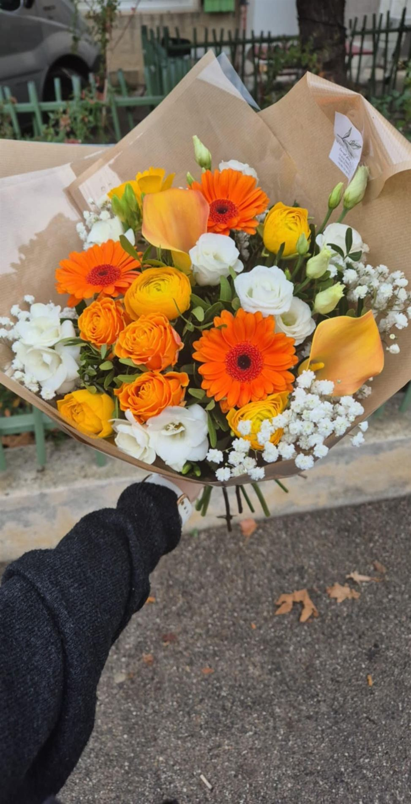
03
Derrière le comptoir fleuri, quelques tables en bois posées sur un damier noir et blanc. Un thé, un café, un sirop, un biscuit maison : on s’assoit, on respire, on repart (rarement sans un bouquet).
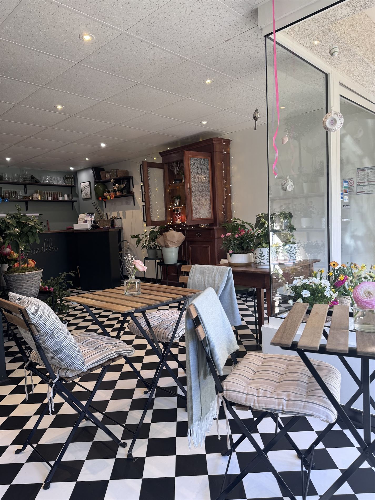
04
Des mots doux laissés par les clientes (5,0 sur Google), un Instagram qui pousse au rythme des saisons, et Bob, le chiot de la boutique : « nouvel employé », d’après l’une d’elles.
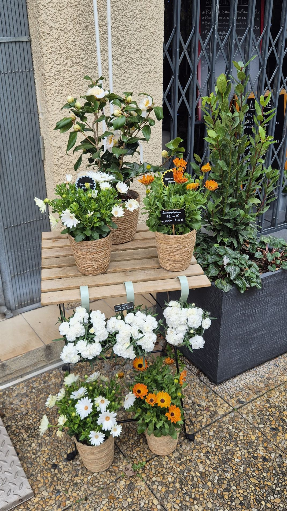
Nos créations
Fleurs, plantes, compositions, et la pause qui va avec. Faites défiler : chaque carte se réserve en deux clics.
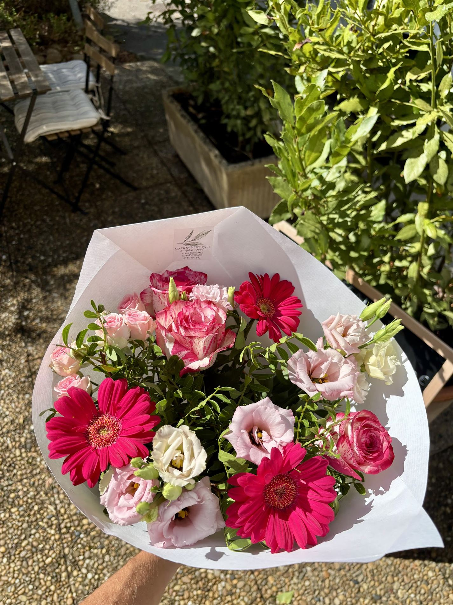
01
Ronds, champêtres ou graphiques. Dites-nous pour qui, pour quoi, avec quel budget : on compose à la main, en boutique.
Sur mesureCommander
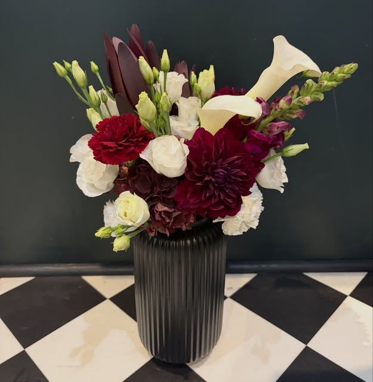
02
Les fleurs du moment à rapporter chez vous ou à offrir : dahlias bordeaux, lisianthus, callas, œillets, pivoines…
Sur mesureRéserver
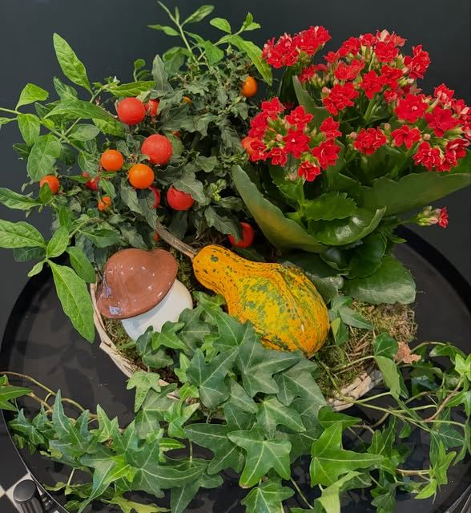
03
Coupes, cache-pots, assemblages d’automne ou de printemps : des compositions qui tiennent la saison sur un guéridon.
Sur mesureCommander
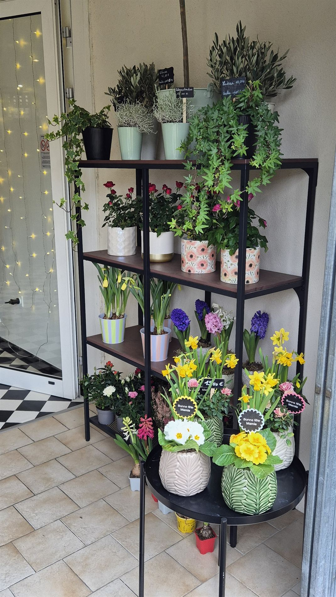
04
Plantes vertes et fleuries de saison, dans de jolis pots à choisir sur place. Pour la maison, le balcon ou un cadeau.
Sur mesurePasser nous voir
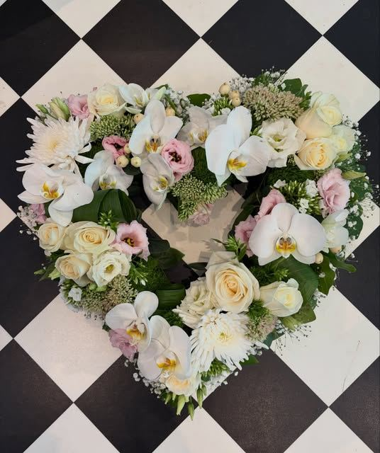
05
Cœurs, gerbes, bouquets de deuil. Un décès ne se programme pas : appelez-nous, on s’organise pour que tout soit prêt à l’heure.
Sur mesureCommander
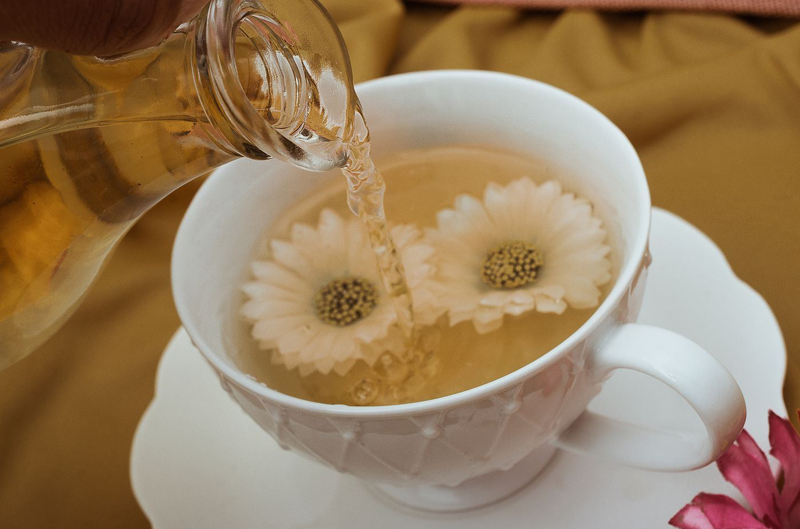
06
Thé, café, sirop et biscuits faits maison, servis entre les fleurs. Une pause de quinze minutes ou de deux heures.
Sur placeRéserver une table
En quelques chiffres
Des chiffres tout simples, relevés sur Google et Instagram le 8 novembre 2026.
note moyenne sur Google
avis de clients
d’ouverture par semaine, du mardi au dimanche
abonnés qui suivent la maison sur Instagram
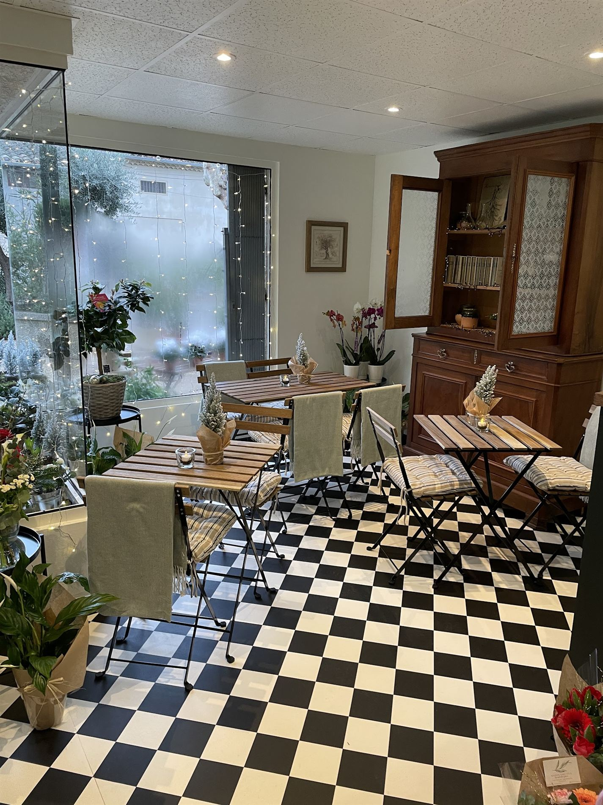
Salon de thé
Au fond de la boutique, quelques tables de bistrot posées sur un damier noir et blanc. On vient pour une boisson chaude, un sirop, un biscuit maison… et on repart rarement les mains vides.
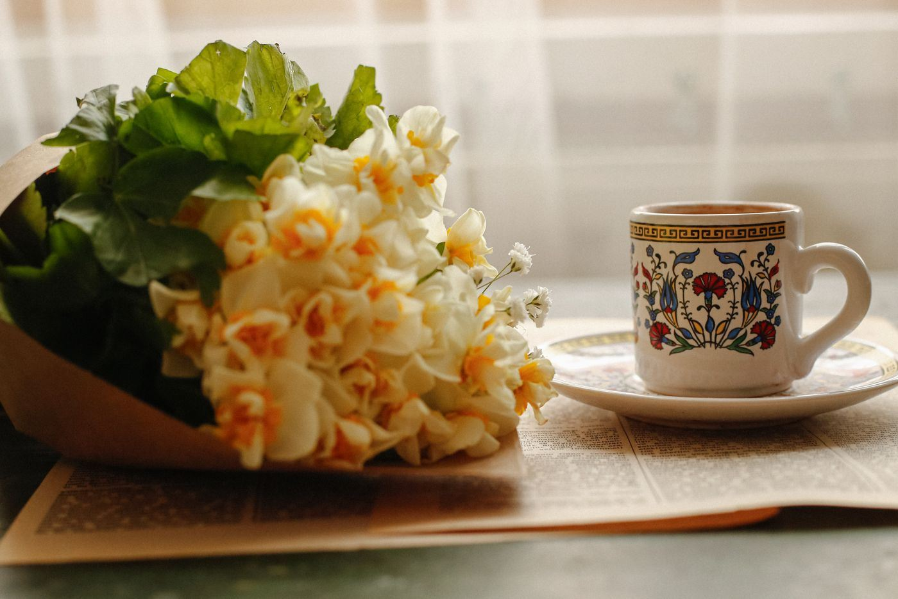
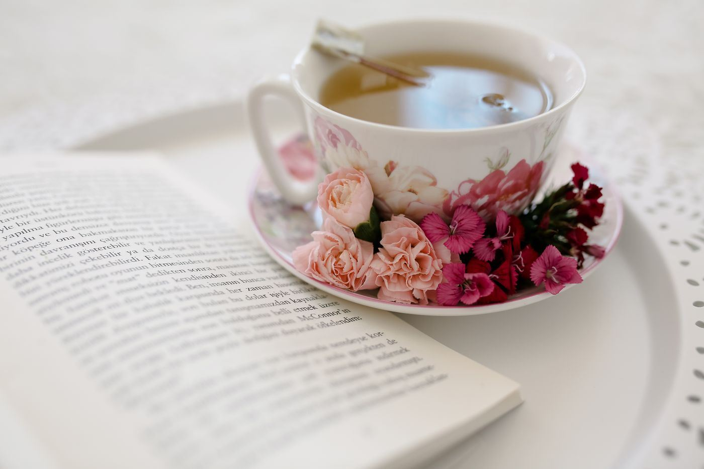
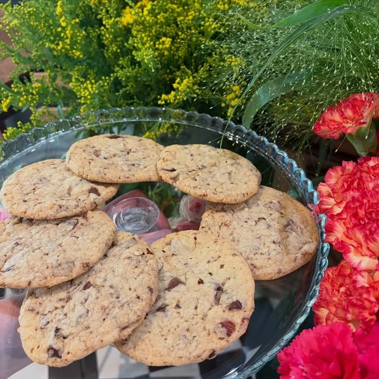
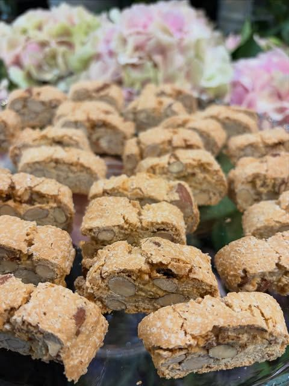
Carte et tarifs à découvrir sur place, aux heures d’ouverture de la boutique.
Réserver une tableGalerie
Avis clients
Un duo de choc pour cette maman et sa fille (si j'ai bien compris !) qui vous accueillent on ne peut mieux !! Très bon conseils et sourires sont toujours présents. La boutique est magnifique, fleurs coupées, compositions, plantes en (jolis !) pots. Vous pouvez aussi y prendre un thé, un café, un délicieux sirop ou un biscuit fait maison. C'est un vrai plaisir d'y aller 😃
Merci beaucoup pour ce si joli message ! 😃 Nous sommes très touchées par vos mots sur la boutique, les fleurs et le petit coin salon de thé. Au plaisir de vous revoir très bientôt pour un nouveau moment fleuri et gourmand 🌸☕️
Accueil exceptionnel en présence de Bob le chiot 🐶, nouvel employé! Nous avons commandés 2 bouquets la veille au soir pour le lendemain pour des obsèques, nous avons récupéré 2 magnifiques bouquets avant même l'ouverture de la boutique afin d'être à l'heure. Merci pour votre rapidité et votre gentillesse !
Une magnifique boutique artisanale, où les fleurs et les créations de bouquets absolument sublimes.
Merci beaucoup Maxime pour ce très bel avis et la jolie photo 🌸
Vous êtes passé(e) par la maison ?
Votre mot compte énormément pour une petite boutique de village.
Laisser un avisRéservation
Une table au salon de thé, un bouquet à retirer, une composition pour une cérémonie : choisissez, on prépare. Votre demande est mise en forme ici, puis envoyée à la boutique, qui vous confirme par téléphone.
09 86 70 44 87Horaires…
Pour une urgence (deuil, cadeau du jour) ou plus de 8 personnes : appelez directement.